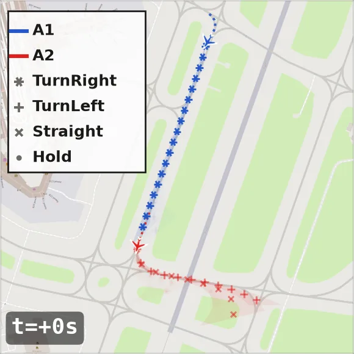
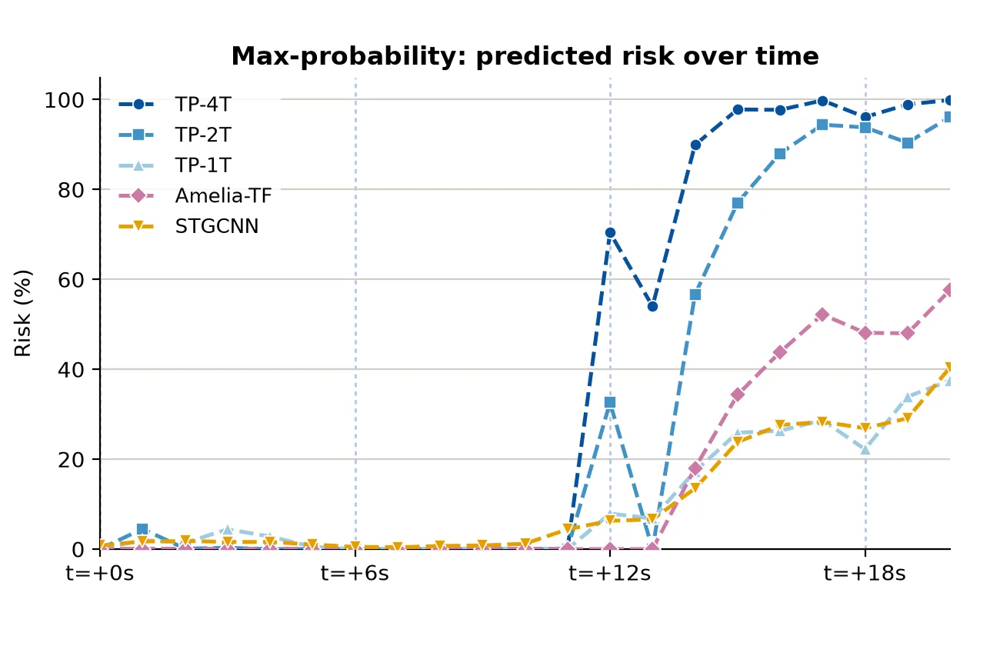
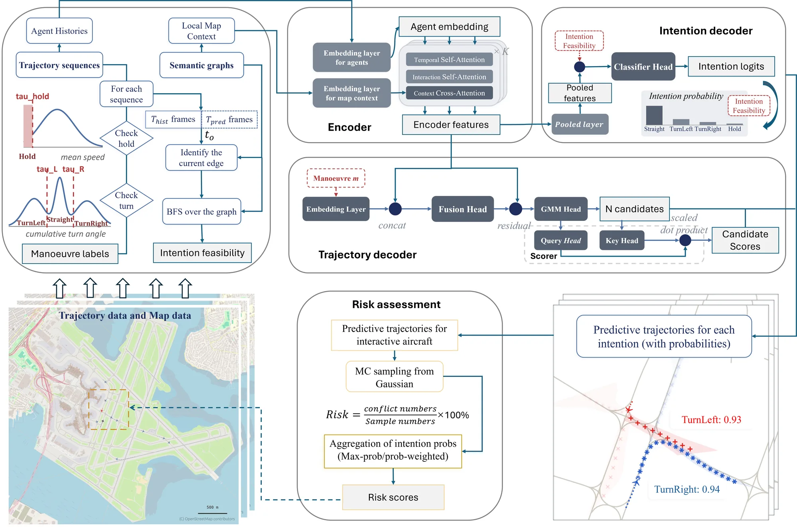
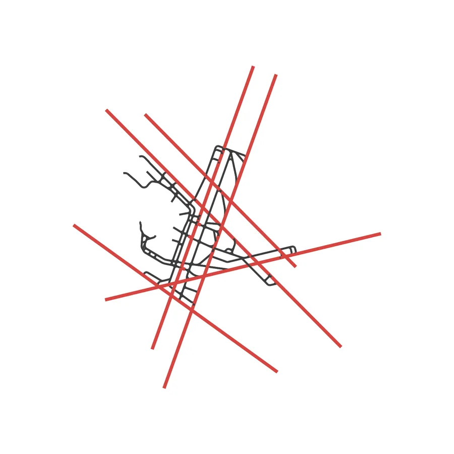
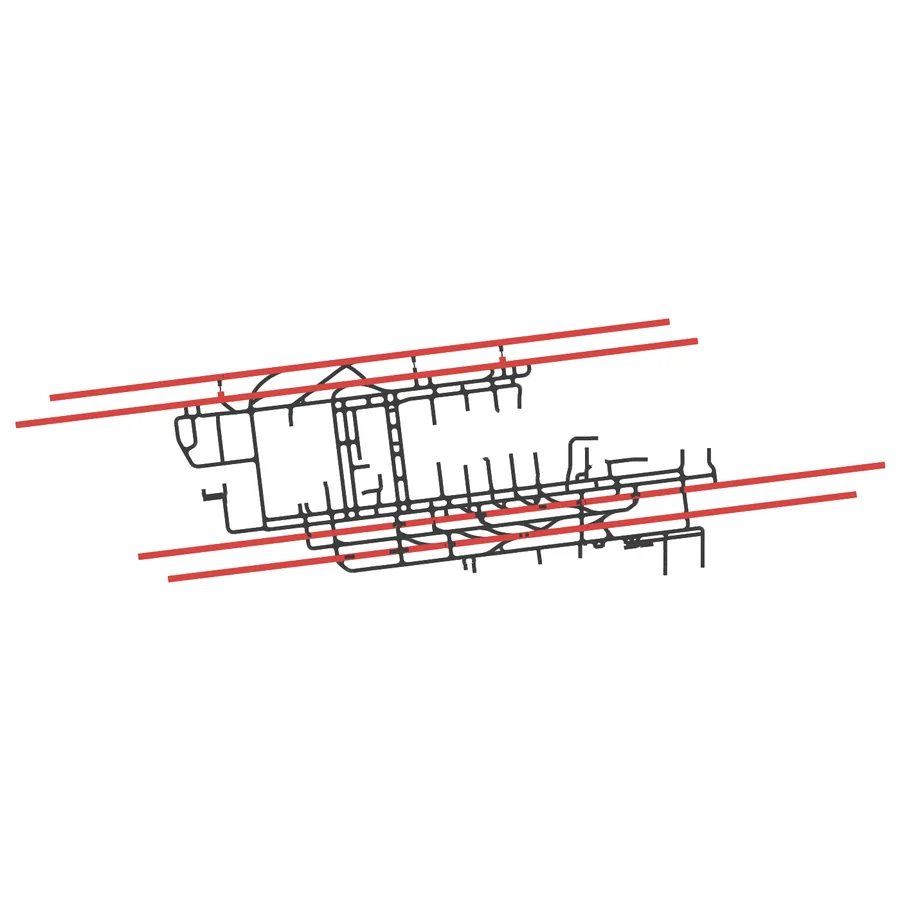
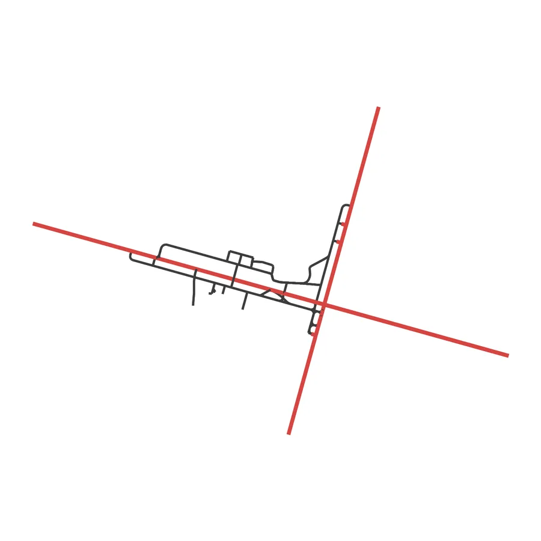

A near-miss, re-predicted every second
Two aircraft taxi in trail towards the same intersection. Pick a model and play the 20 s window to see how its predictions evolve. Each candidate trajectory is drawn with opacity proportional to its predicted probability, with a one-standard-deviation band.

A1 and A2 are both predicted. Markers along each predicted line identify the intention. Dotted lines show the observed 10 s history.
Predicted collision risk over the same window

Two phases: intention first, then trajectory
Existing airport surface predictors map history directly to a set of candidate trajectories, with no explicit notion of manoeuvre and nothing that rules out turns where no taxiway exists. TP makes intention an explicit, map-constrained intermediate output.

Data-driven manoeuvre labels
Speed and cumulative-turn thresholds learned from the data assign each sequence a TurnLeft, TurnRight, Straight or Hold label.
Topology-constrained intention
A Transformer encoder (temporal, interaction and map attention) feeds an intention classifier; a breadth-first search over the taxiway graph masks manoeuvres unreachable within the horizon.
Intention-conditioned trajectories
A Gaussian mixture decoder generates N candidates per manoeuvre, each with mean and uncertainty, and a learned scorer ranks them.
Distribution-aware risk
Monte Carlo conflict probability is aggregated over intentions, by max-probability or probability-weighted, to give a real-time risk score.
Trajectory accuracy across three airports
All manoeuvres pooled; each cell shows the 20 s / 50 s horizon in metres (lower is better). RMSE and ADE score the deployed max-probability prediction; minADE scores the best candidate in the pool (oracle).
| Method | RMSEdeployed | ADEdeployed | minADEoracle |
|---|
Selected rows. TP-4T selects among its candidates with the learned scorer. The full comparison (per-manoeuvre results, final displacement error, NLL, additional Amelia-TF variants) is in the manuscript.
Large-scale airport surface surveillance data
Models are trained and evaluated on historical surface surveillance tracks from the Amelia dataset at three US airports with very different layouts, using each airport's taxiway (grey) and runway (red) graph.


